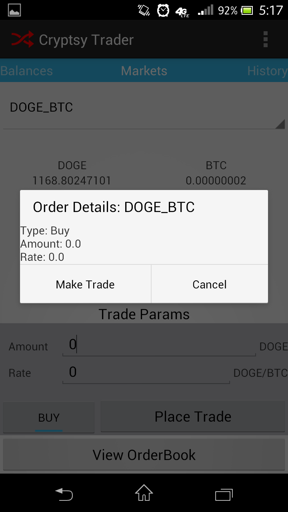

This is an android application that me and my partner Seth made as a class project.This is a crypto currency app that interfaces with the Cryptsy API. The app allows you to check your balances, order history, active orders, and allows you to place orders. This was done by interfacing with the Cryptsy website through HTTP post in the android's async tasks. It uses your key and secrete to authenticate, and these can be set using the QR scanner. This app has small banner adds.
Other projects include:
This is the view showing only the balances that one has set to preferred.
And now its all the markets! The list is scrollable. It's easy to navigate between the two with the buttons
This shows ones order history; Also scrollable.
This page displays your active orders
View the recent market orders.
Set up an order!
Make the trade!
Set your key and secrete or change your preferred markets and coins.
Set your key! These are save in your shared preferences.
Whats a key without a secrete!
What are the coins you commonly deal with.
Get your trading markets ready for easy access.
Logo, made in paint. MAD skills